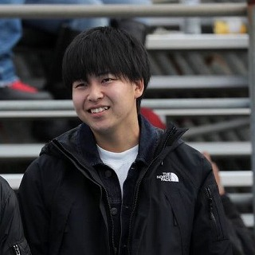

About

Shinnosuke Yasuda
178cm
70～75kg
1998, Fukuoka in Japan
Lives and works in Berkeley, California
Shinnosuke Yasuda
178cm
70～75kg
1998, Fukuoka in Japan
Lives and works in Berkeley, California
Artist Bio
Shinnosuke Yasuda was born in 1998 in Fukuoka in Japan. He received his Bachelor Degree in Art Practice at University of California Berkeley. He sets his creative identity between being an artist and programmer. While working as a freelance programmer, he spent the first half of his college career majoring in Computer Science and Mechanical Engineering and finished all of the lower division Math and Physics courses, and the second half majoring in Art Practice. He explores the coexistence and co-prosperity between the real and virtual world, and pursues unusual sensational user experiences. Another point of his works is about dimensionality. Many of his works have transformations between 2D and 3D, and changes with time and viewer interaction. He has advocated the interactive changes are the change along with the 5th dimension. Yasuda currently lives and works as a student, artist, programmer, game creator, logo designer and art director in Berkeley, CA
History
2013: Entered Ohori High School
2016: Started learning programming
2017: Entered a community college and majored in computer science
2018: Started majoring in mechannical engineering
Launched a game "Atomize"
2019: Started majoring in art practice
Co-founded Tripia Inc.
2020: Launched "StressBank", an SNS to share stresses
Transfered to UC Berkeley
Languages
HTML, CSS, C♯, Java, Kotlin, PHP, JavaScript, C++, C, Japanese, English
Available Jobs
Game Creations (Unity+C♯)
Web Creations (HTML,CSS,JS,PHPまたはSpringBoot,Java)
Aby Kinds of Designs
3D Model Designs
Art Directions
English-Japanese Translations
ß